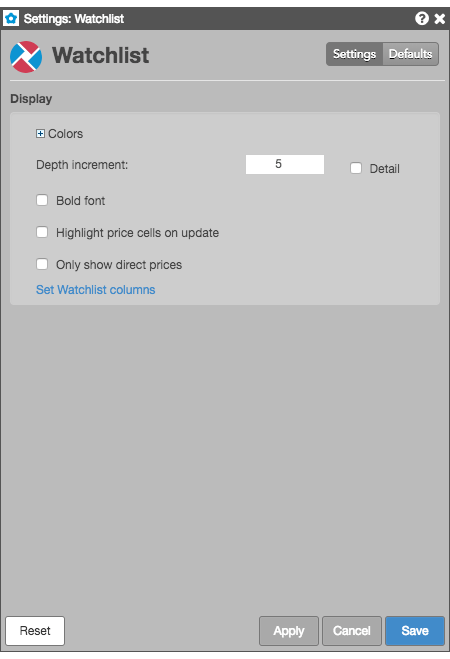
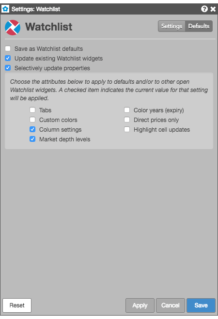

These settings affect only the selected Watchlist widget. To update the default settings with these value for newly-opened Watchlist widgets, or to apply them to existing opened widgets, click Defaults.

{% include settings/wl-settings.html %}Watchlist lets you select individual customizations to save as default Watchlist settings and to update existing Watchlist widgets, while applying other customizations the current widget. Checking either of the Save as Watchlist defaults or Updating existing Watchlist widgets settings enables the Selectively update properties setting. You can choose the individual widget attributes to you want to save.
